Filmografía
Un listado sinóptico, en orden cronológico. Incluye todas las películas y series (no incluye mangas, ni cortos) que, o bien fueron dirigidas por Miyazaki o Takahata, o bien fueron producidas por Ghibli.
| 1968 | 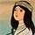 Horus (El príncipe del sol - Hols, Prince of the Sun - Little Norse Prince Valiant) Película |
Takahata: Dirección Miyazaki: Escenografía, animación |
|
1972 1973 |
Panda Kopanda (Panda, Go Panda!) Panda Kopanda II (Rainy Day Circus) Dos películas cortas |
Takahata: Dirección Miyazaki: Guión, diseño, animación |
| 1974 | Heidi (Heidi, Girl of the Alps) Serie TV, 52 episodios |
Takahata: Dirección Miyazaki: Escenografía |
| 1976 | 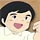 Marco (De los Apeninos a los Andes - 3000 Miles In Search of Mother) Serie TV, 52 episodios |
Takahata: Dirección Miyazaki: Escenografía |
| 1978 | Conan, el niño del futuro (Future Boy Conan) Serie TV, 26 episodios |
Miyazaki: Dirección, storyboards, escenas. Takahata: Dirección de 5 episodios |
| 1979 | 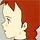 Ana de Tejas Verdes (Anne of Green Gables, Red-haired Anne) Serie TV, 50 episodios |
Takahata: Dirección Miyazaki: Escenas (primeros 15 episodios) |
| 1979 | 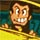 Lupin III: El castillo de Cagliostro (Rupan Sansei: Kariosutoro no Shiro) Película | Miyazaki: Dirección |
| 1981 | Jarinko Chie (Jarinko Kie, Kie the Bratt, Kie le petite peste) Película, y serie TV (64 episodios) | Takahata: Dirección |
| 1982 | 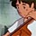 Goushu, el cellista (Gauche the Cellist) Película corta | Takahata: Dirección |
| 1982 | 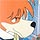 Sherlock Hound (Detective Holmes) Serie TV, 26 episodios | Miyazaki: Dirección de 6 episodios |
| 1984 | 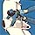 Nausicaa (Kaze no Tani no Naushika - Nausicaa del Valle del viento) Película |
Miyazaki: Dirección y guión Takahata: Productor |
| (Nausicaa marca el nacimiento del estudio Ghibli) | ||
| 1986 | 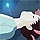 Laputa: Castillo en el cielo (Tenkuu no Shiro Rapyuta) Película |
Miyazaki: Dirección, guión Takahata: Producer |
| 1988 | 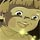 La tumba de las luciérnagas (Hotaru no Haka - Grave of the Fireflies) Película | Takahata: Dirección, guión |
| 1988 | 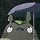 Mi vecino Totoro (Tonari no Totoro) Película |
Miyazaki: Dirección, guión |
| 1989 | Kiki's Delivery Service (Majo no Takkyuubin - La bruja Nicky) Película | Miyazaki: Dirección, producción |
| 1991 | 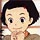 Omohide Poro Poro (Only Yesterday - Ayer nomás) Película |
Takahata: Dirección, guión Miyazaki: Producción |
| 1992 | 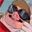 Porco Rosso (Kurenai no Buta) Película | Miyazaki: Dirección, guión |
| 1993 | 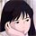 Puedo escuchar el mar (Umi ga Kikoeru - Ocean Waves - I Can Hear the Sea) Película TV | Director: Tomomi Mochizuki |
| 1994 | Pom-Poko: la guerra de los tanukis (Heisei Tanuki Gassen Pon Poko) Película | Takahata: Dirección, guión |
| 1995 | 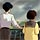 Whisper of the Heart (Mimi wo Sumaseba - Si escuchas de cerca) Película |
Yoshumi Kondo: Dirección Miyazaki: Guión, producción. |
| 1997 |
| Miyazaki: Dirección, guión |
| 1999 | 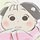 Mis vecinos los Yamada (Houhokekyo Tonari no Yamada-kun) Película | Takahata: Dirección, guión |
| 2001 |
| Miyazaki: Dirección, guión, storyboards |
| 2002 | 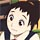 El reino de los gatos (Neko no Ongaeshi - The cat returns) Película | Dirección: Hiroyuki Morita |
| 2004 | 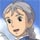 El castillo errante de Howl (Hauru no Ugokushiro - Howl's Moving Castle - El increíble castillo vagabundo) Película | Miyazaki: Dirección |
| 2006 | 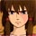 Cuentos de Terramar (Gedo Senki - Tales from Earthsea) Película | Dirección: Goro Miyazaki |
| 2008 | Ponyo (Gake no ue no Ponyo) Película | Miyazaki: Dirección, guión, storyboards |
También pueden consultar la lista de películas, agrupada por director, en nausicaa.net; el sitio también ofrece un listado exhaustivo de la filmografía de Miyazaki y Takahata.